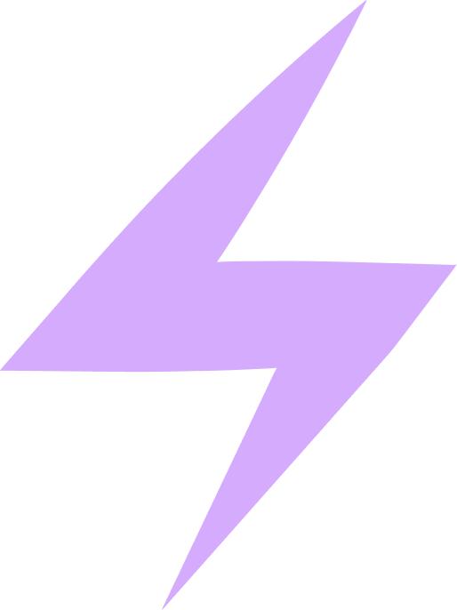
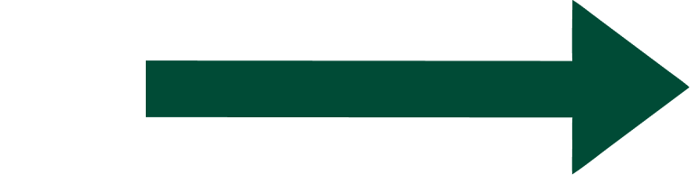

Do's & don'ts
De korte versie van het merk. Houd je hieraan en het voelt als UvNL — eerlijk, echt, een beetje rommelig, maar nooit slordig met de basis.
30–50% van een lay-out is Varsity Green op het warme Paper-canvas.
Nooit twee verzadigde kleuren laten vechten. Eén accent per vlak.
Koppen als vraag, links uitgelijnd, gecondenseerd in hoofdletters.
stressbeleving.
Geen hele alinea's in de serif, geen corporate statements.

Eén ornament per vlak, licht geroteerd, als interpunctie.

Geen icoon-confetti en geen bolt-rechte plaatsing.
Echte wetenschappers, warm en licht korrelig, tight gecropt.
Niet ontkleuren tot grijswaarden en geen stockfotografie.
Kleur in context
De stelregel uit de huisstijl: op donkere vlakken is Electric Purple je accent, op lichte vlakken Varsity Green. Zo blijven merktekens altijd leesbaar.
Botsende kleuren → toegankelijk alternatief
Zet nooit twee even verzadigde kleuren tegen elkaar (slecht voor contrast en kleurenblinden). Vervang er één door Electric Purple en geef merktekens een ring met hoog contrast (Printer Ink of Paper).
Illustratie & beeld
Illustraties bouw je uit basis, herkenbare vormen — bij voorkeur geometrisch. Geen doodles of krabbels.
Voor video-thumbnails gebruik je échte footage — het liefst het eerste beeld waarmee de video start. Authenticiteit en echtheid maken het geloofwaardig: zo onbewerkt mogelijk, tenzij bewerking functioneel is.
Snel-checklist
- Groen op Paper als basis, één accentkleur per vlak.
- Koppen in OSG Condensed, hoofdletters, links uitgelijnd, vaak een vraag.
- Body in zinsstijl. Geen uitroeptekens tenzij echt verrassend.
- Eén merkicoon per vlak, 8–20° gedraaid. Geen emoji, geen Unicode-pijltjes.
- Echte mensen, geen stock. Logo met ruime marge, nooit geroteerd of vervormd.
- Zachte schaduw (0 2px 16px rgba(0,0,0,.05)), 16px radius op contentcards. Geen glas, geen blur.